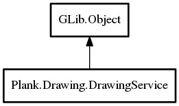

DrawingService
Object Hierarchy:

Description:
public class DrawingService : Object
Utility service for loading icons and working with pixbufs.
Content:
Static methods:
- public static weak IconTheme get_icon_theme ()
- public static string? get_icon_from_file (File file)
Gets the icon name from a GLib.File.
- public static string? get_icon_from_gicon (Icon? icon)
Gets an icon from a GLib.Icon.
- public static Pixbuf load_icon (string names, int width, int height)
Loads an icon based on names and the given width/height
- public static File? try_get_icon_file (string name)
Try to get a GLib.File for the given
icon name
- public static Surface? load_icon_for_scale (string names, int width, int height, int scale)
Loads an icon based on names and the given width/height
- public static Pixbuf ar_scale (Pixbuf source, int width, int height)
Scales a Gdk.Pixbuf, maintaining the
original aspect ratio.
- public static Color average_color (Pixbuf source)
Computes and returns the average color of a
Gdk.Pixbuf. The resulting color is the average of all pixels which aren't nearly transparent while saturated pixels are
weighted more than "grey" ones.
Inherited Members:
All known members inherited from class GLib.Object
- @new
- newv
- new_valist
- get_type
- get_class
- @ref
- unref
- ref_sink
- weak_ref
- weak_unref
- add_weak_pointer
- remove_weak_pointer
- @get
- @set
- get_property
- set_property
- get_data
- set_data
- set_data_full
- steal_data
- get_qdata
- set_qdata
- set_qdata_full
- steal_qdata
- freeze_notify
- thaw_notify
- dispose
- constructed
- notify_property
- connect
- disconnect
- add_toggle_ref
- remove_toggle_ref
- bind_property
- notify
- ref_count